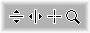

Derived from: none
Declared in: Cursors.h
Library: none
Provides definitions for commonly used cursors that BeOS doesn't provide.

extern const void* c_v_resize_cursor;
extern const void* c_h_resize_cursor;
extern const void* c_crosshairs_cursor;
extern const void* c_magnify_cursor;
By Brian Tietz
Copyright 2000
Bug reports (including documentation errors) and feature requests can be sent to briant@timelinevista.com.